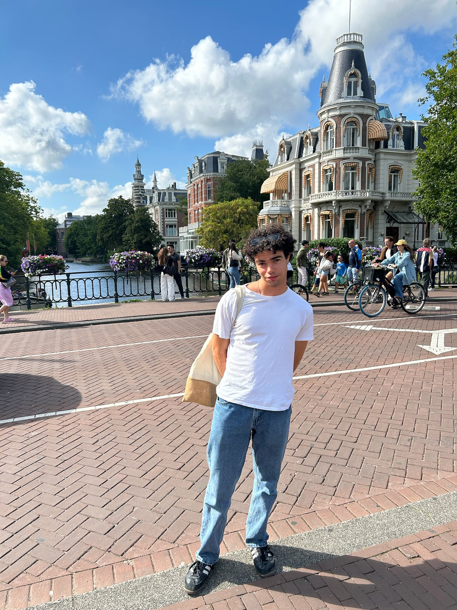

Mechanical Engineering · Michigan
Ideas Into
Motion.
Design Into Reality.
I’m Victor Delaney Sire, a mechanical engineering student at the University of Michigan. I design, build, and test things that move the world forward.
◎ Ann Arbor, MIB.S.E. Mechanical Engineering · 2027

⌘ Mechanical Design◇ Simulation & Analysis⊞ Hands-On Fabrication↗ Robotics & Controls
01 / Selected Work
Built From Curiosity.
A Collection Of Mechanisms, Machines, And Lessons Learned.
02 / Along The Way
Experience In The Real World.
Learning Through Research, Collaboration, And A Change Of Perspective.
04 / Get In Touch
Let’s Build Something That Matters.
Have a project, an opportunity, or an engineering question? Let’s connect.